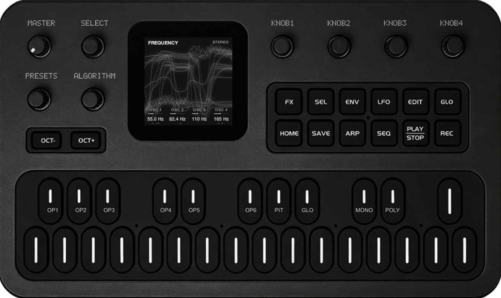
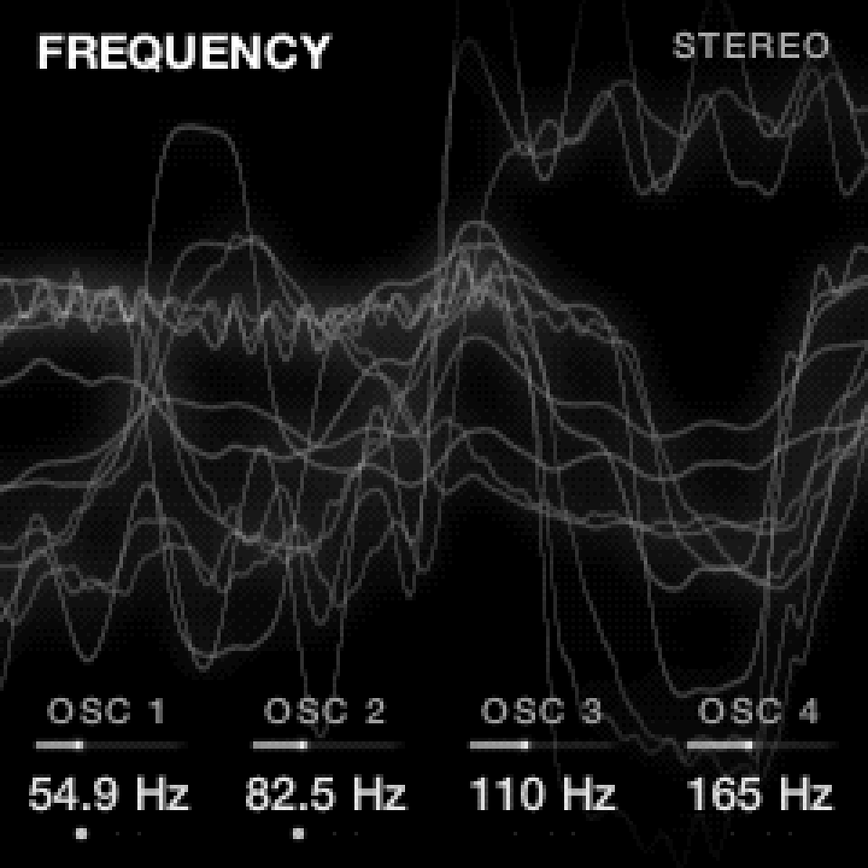
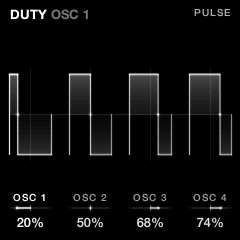
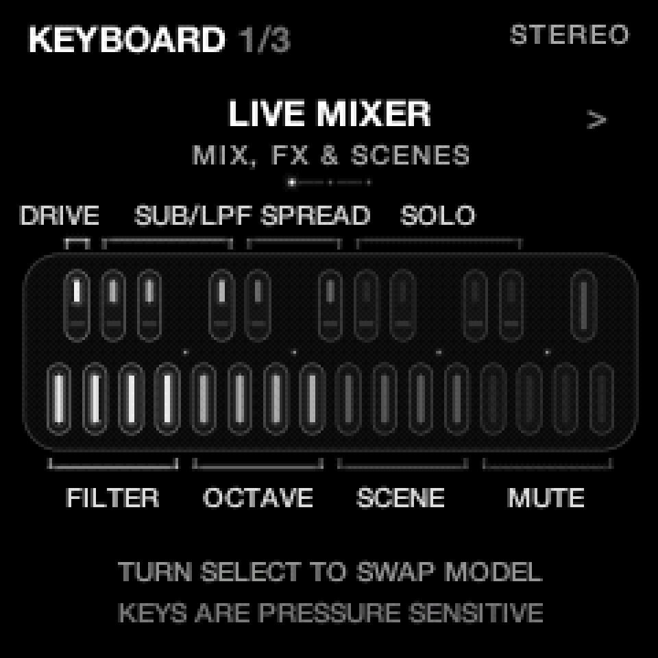

RUIDO USER GUIDE
A practical, hands-on field manual for playing, shaping, and patching Ruido on your production M-VAVE FM-1 synthesizer.
1.1 CONNECTIONS
All connections and the power switch run along the top edge of the chassis.
-
HEADPHONES / LINE OUT 3.5 MM STEREO
3.5 mm stereo output for headphones, pedals, mixer, or Eurorack modular gear.
-
MIDI IN 3.5 MM TYPE-A
3.5 mm mini-jack input for external tempo clock, start/stop transport, and note sync.
-
USB-C AUDIO + POWER
Charges the internal battery, streams stereo digital audio and MIDI to a computer or tablet, and updates firmware.
-
POWER ON / OFF SWITCH
Switches the unit on and off.
1.2 FRONT PANEL
All controls are direct and accessible without nested sub-menus.

-
1 MASTER
Sets analog output volume.
-
2 SELECT
Scrolls menus, chooses which voice you are editing, and swaps keyboard layouts.
-
3 PRESETS
Blends smoothly across your four saved scenes.
-
4 ALGORITHM
Starves the shared power supply so the four voices pull and lock together; sets tempo in Rhythm Lab.
-
5 KNOB 1–4
Tunes oscillators 1–4 on Home, or adjusts the four parameters along the bottom of the screen.
-
6 OCT- / OCT+
Tuning gears. Hold [OCT-] for slow fine tuning, or [OCT+] for wide sweeps.
-
7 MODE BUTTONS
Jump to Filter [FX], Keyboard [SEL], Modulation [LFO], Voice Trim [EDIT], Settings [GLO], or [HOME].
-
8 27-KEY SURFACE (20 PRESSURE)
The left 20 keys respond continuously to finger weight; the right-side Solo, Mute, and Tap keys act as on/off switches.
-
1 SWITCH ON
Flip the power switch on the top edge. The unit wakes up into your last sound.
Note:Start with (MASTER) turned low before connecting headphones or studio monitors.
-
2 CONNECT AUDIO
Plug headphones or a stereo breakout cable into the 3.5 mm output and raise (MASTER) gradually.
-
3 INSTALL IN BROWSER
Connect via a data-capable USB-C cable, open Ruido on The Firmware Hub in Chrome or Edge, and follow the prompts.
-
4 RESCUE & REVERT
If an update is interrupted, switch off, hold [OCT-] while flipping the power switch on, and re-flash. You can return to the stock M-VAVE firmware at any time.
The high-contrast monochrome display keeps you oriented without clutter.

-
TOP LEFT
Current page and selected voice.
-
TOP RIGHT
Stereo/mono routing or active mode.
-
CENTER SCOPE
Live waveform of all four voices; labels fade out when idle so you only see the sound.
-
BOTTOM STRIP
Four sliders matching (KNOB 1) – (KNOB 4) directly below the screen.
-
HOME (KNOB 1–4)
Tune oscillators 1–4 from slow clicks up to high tones.
-
HOLD [OCT-] (KNOB 1–4)
Fine tune slowly to dial in gentle beating intervals.
-
HOLD [OCT+] (KNOB 1–4)
Sweep across the full pitch range in two turns.
-
HOME (SELECT)
Zoom the oscilloscope waveform in or out.
-
HOLD [SEL] (SELECT)
Switch between the three 27-key instruments.
-
HOLD [SAVE] [SCENE 1–4]
Save your current sound into one of four scene slots.
Quick visual notation used throughout this manual:
- [FX] TAP Press & release
- [OCT-] HOLD Keep pressed
-
[OCT-] (K1)COMBO Together
-
[EDIT] (SEL)SEQUENCE In order
- (KNOB 1) TURN Rotate knob
- [KEY] LEAN Finger pressure
- 01 // 4 DRONE VOICES
- 02 // PER-VOICE FILTER & 2 LFOS
- 03 // 3 KEYBOARD INSTRUMENTS
- 04 // 4 MORPHING SCENES
All four voices run continually, like an analog drone box. Instead of playing standard piano notes, you shape pitch, filter resonance, shared power-supply sag, and finger weight in real time.
7.1 BUILD YOUR FIRST DRONE
-
1 TUNE A CHORD
Press [HOME] and turn (KNOB 1) – (KNOB 4) to set a low root note and three close harmonies. Hold [OCT-] while turning to find slow, warm beating.
-
2 STARVE THE SUPPLY
Turn (ALGORITHM) to around 40% so close pitches pull into chorus. Turn past 50% to hear the voices tug and snap together.
-
3 SCULPT THE FILTERS
Press [FX], turn (SELECT) to pick voice 1 and roll (KNOB 3) down for deep bass; pick voice 2 and raise (KNOB 4) until the filter begins to sing.
-
4 ADD SLOW MOTION
Press [LFO], set (KNOB 1) to LPF, pick a smooth wave on (KNOB 2), keep speed slow on (KNOB 3), and raise depth on (KNOB 4) so the filter breathes on its own.
-
5 LEAN INTO THE KEYS
Press [SEL] to confirm Live Mixer is active, then lean into the first four bottom keys to open and close each voice's filter by hand.
-
6 SAVE YOUR SCENE
Hold [SAVE] and tap one of the four scene keys on the bottom row to store your patch.
8.1 [FX] DUAL FILTER

Each voice has its own high-pass and low-pass filter in series. Turn (SELECT) to choose voice 1–4.
8.2 [LFO] MODULATION

Two LFOs per voice (A and B). Turn (SELECT) to pick an LFO.
Tip: Point LFO B at A-rate or depth for shifting patterns that never repeat.
8.3 [EDIT] VOICE TRIM

Turn (SELECT) to step through four trim pages where (KNOB 1) – (KNOB 4) adjust voices 1–4 side by side:
8.4 [GLO] GLOBAL SETTINGS
Turn (SELECT) to pick a setting and (KNOB 1) to change it: stereo or mono output, momentary or latching mutes/solo/scene behavior, external MIDI clock sync, and key pressure sensitivity (1–5).
Hold [SEL] and turn (SELECT) to switch the 27-key surface between three instruments. The left 20 keys respond continuously to finger weight; the right-side Solo, Mute, and Tap keys act as on/off switches.
9.1 LIVE MIXER

Performance mixing and macros: upper row offers global drive, harmonic ratio lock, and stereo spread; bottom row opens per-voice filters like vactrol gates, shifts octaves, and morphs across four scenes.
10.1 ADJUST KEY PRESSURE SENSITIVITY
- 1. Press [GLO].
- 2. Scroll (SELECT) to Key Sensitivity.
- 3. Turn (KNOB 1) from 1 (light touch) to 5 (firm press) while testing any key.
10.2 PLUG INTO A MONO GUITAR PEDALBOARD
- 1. Connect a 3.5 mm stereo to dual 1/4" mono TS breakout cable and run one 1/4" plug to your pedals.
- 2. Press [GLO] and set output routing to mono.
Avoid plugging a single mono 3.5 mm cable directly into the output jack, as it shorts the right channel.
10.3 SWELL A MUTED VOICE WITH FINGER WEIGHT
- 1. On 1/3 Live Mixer, tap a mute key on the bottom right to silence a voice.
- 2. Lean slowly into that voice's filter key on the bottom left to fade it in organically, and release to let it decay.
10.4 TURN AN OSCILLATOR INTO RHYTHMIC DRUM PINGS
- 1. On [HOME], hold [OCT-] and turn (KNOB 1) below 1 Hz until it clicks slowly.
- 2. Press [FX] and raise (KNOB 4) past 60% so each click rings the filter.
10.5 SYNC RHYTHM LAB TO EXTERNAL MIDI
- 1. Send MIDI clock via 3.5 mm TRS, USB-C, or Bluetooth MIDI.
- 2. Hold [SEL] + turn (SELECT) to 3/3 Rhythm Lab.
- 3. Hold any Divide or Euclid key on the bottom row.
Is flashing Ruido safe, and can I revert back to the factory M-VAVE firmware?
Yes. Ruido writes exclusively to the application partition and preserves the hardware bootloader. Power-on Hold [OCT-] forces hardware recovery mode at any time, allowing clean recovery or instant reversion to factory stock firmware.
Does Ruido output digital audio over USB-C as well as the 3.5 mm analog jack?
Yes. Alongside the analog line jack, Ruido streams 48 kHz class-compliant UAC1 digital stereo audio with 1-LSB TPDF dithering and clock-drift interpolation directly to macOS, iOS, Windows, Linux, or standalone USB host hardware.
Why doesn't Ruido include built-in digital reverb or delay?
Ruido puts all of its DSP into 4× oversampling and per-voice high-pass and low-pass Sallen-Key filters, so guitar pedals and Eurorack get an alias-free signal.
Can I plug Ruido straight into a mono guitar pedalboard?
Yes. Use a standard 3.5 mm TRS stereo-to-dual-1/4" TS breakout cable (never use a mono 3.5 mm TS cable directly in a stereo headphone jack, as that shorts the right channel to ground), and set OUTPUT ROUTING to MONO in Global Settings to sum all voices into a phase-coherent signal.
Why square and pulse waves instead of wavetables or multiple shapes?
Real CD40106 oscillators couple and hard-sync across a shared power rail because of their sharp switching edges. Acoustically, square waves contain only odd harmonics, leaving open frequency space for fuzz and distortion pedals without intermodulation mud.
READY TO PLAY RUIDO?
Install Ruido directly onto your M-VAVE FM-1 from your browser over USB-C via The Firmware Hub. No command-line tools required.